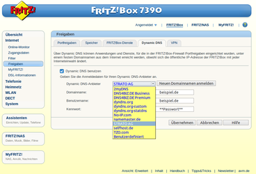
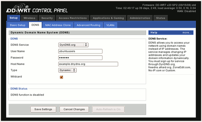
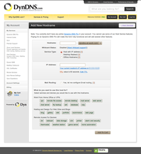

DDNS-Clients
Dieser Artikel wurde für die folgenden Ubuntu-Versionen getestet:
Ubuntu 16.04 Xenial Xerus
Zum Verständnis dieses Artikels sind folgende Seiten hilfreich:
Einleitung¶
Dynamisches DNS (kurz DDNS oder DynDNS) dient dazu, dass ein Rechner oder Router, der durch die bei DSL-Verbindungen übliche tägliche Zwangstrennung eine wechselnde öffentliche IP-Adresse besitzt, immer über den gleichen Domainnamen angesprochen werden kann. So kann man auch bei einer dynamischen IP-Adresse einen immer über den gleichen Namen erreichbaren FTP- oder Webserver betreiben.
Aktualisierung der IP mit DDNS¶
Die aktuelle IP-Adresse wird von einem Client-Programm bei jeder Neueinwahl in das Internet oder IP-Änderung an den DDNS-Dienst übertragen. Dieser verknüpft dann die neue IP mit dem Domainnamen. Danach kann der Rechner sofort unter dem bekannten Namen erreicht werden. Allerdings sollte man darauf achten, dass die Einwahl nicht zu häufig pro Tag geschieht, da sonst manche der kostenlosen DDNS-Dienste Probleme bereiten können ("fair use policy").
DDNS und Hardwarerouter¶
Benutzt man einen Hardwarerouter für den Internetzugang, so kann man sich meist die Installation von Software auf dem eigenen Rechner sparen. Viele Router besitzen einen eingebauten DDNS-Client, den man auch nutzen sollte, wenn man den Aufbau einer Internetverbindung einem Router überlässt. Nachteil: hier lässt sich meist nur ein DDNS-Konto einrichten. Benötigt man mehrere, muss man zu Softwareprogrammen auf dem Rechner greifen.
Hinweise zur Einrichtung des DDNS-Client im Router findet man sicherlich im Handbuch des Routers. Meist führt die Suche nach den Schlagwörtern "DynDNS" oder "DDNS" zu den gesuchten Informationen. Unten ein Beispielbild aus der Web-Oberfläche einer Fritz!Box. Hier sieht man auch, welche DDNS-Anbieter nativ unterstützt werden.
|  |
| DDNS-Auswahl FritzBox |
|  |
| DDNS bei DD-WRT |
DDNS Software¶
Besitzt man keinen Hardwarerouter oder der genutzte Router bietet die oben beschriebene Funktionalität nicht, so kann man auch ein DDNS-Clientprogramm auf dem eigenen Rechner installieren. Neben ddclient gibt es noch andere Programme, die im weiteren Verlauf beschrieben werden. Man sollte aber prüfen, ob der gewünschte DDNS-Dienst vom jeweiligen Programm unterstützt wird.
ddclient¶
ddclient  kann über die Paketverwaltung installiert [1] werden:
kann über die Paketverwaltung installiert [1] werden:
ddclient (universe )
 mit apturl
mit apturl
Paketliste zum Kopieren:
sudo apt-get install ddclient
sudo aptitude install ddclient
Während der Installation wird man nach den Zugangsdaten gefragt. Man sollte sich also schon vorher einen DDNS-Account besorgen und die Weiterleitungsdomain anlegen. Möchte man nachträglich noch Änderungen an der Konfiguration vornehmen, so editiert man die Konfigurationsdatei /etc/ddclient.conf (siehe Beispiel). Diese muss mit Rootrechten bearbeitet [3] werden.
Befindet sich der Server selber hinter einem Router, der DDNS nicht unterstützt, so muss ddclient etwas anders konfiguriert werden. ddclient kann die externe Internet-IP von verschiedenen Hardware-Routern auslesen. Diese müssen in der use-Variablen eingetragen werden, z.B.
use=linksysuse=dlink-614usw.
Eine vollständige Liste der unterstützten (älteren) Hardware-Router findet man auf der Homepage . Alternativ kann ddclient die externe IP auch über eine Webseite abfragen. Dazu muss die Option:
use=web
eingetragen werden.
Beispiel für /etc/ddclient.conf:
# Configuration file for ddclient generated by debconf # # /etc/ddclient.conf pid=/var/run/ddclient.pid protocol=dyndns2 use=if, if=ppp0 # use=web, web=checkip.dyndns.org server=members.dyndns.org login=loginname password=geheim dyndnsdomainname1.dyndns.org,dyndnsdomainname2.dyndns.org
oder man wiederholt die Konfiguration des ddclient-Paketes in einem Terminal [4] mit
sudo dpkg-reconfigure ddclient
Eine zweite Konfigurationsdatei für ddclient ist die /etc/default/ddclient. In dieser Datei wird festgelegt, wie ddclient arbeiten soll. Es gibt zwei Modi:
"Daemon": Im Daemon- oder Dienst-Modus läuft ddclient permanent im Hintergrund und überwacht, ob sich die Internet-Adresse ändert.
"Dial-on-demand": In diesem Modus wird ddclient automatisch aufgerufen, sobald eine Internetverbindung aufgebaut wurde. Dieser Modus eignet sich besonders gut, wenn man eine Internetverbindung nutzt, die nur bei Bedarf hergestellt wird.
# Configuration for ddclient scripts # generated from debconf on Do Jan 12 22:54:36 CET 2006 # # /etc/default/ddclient # Set to "true" if ddclient should be run every time a new ppp connection is # established. This might be useful, if you are using dial-on-demand run_ipup="false" # Set to "true" if ddclient should run in daemon mode run_daemon="true" # Set the time interval between the updates of the dynamic DNS name in seconds. # This option only takes effect if the ddclient runs in daemon mode. daemon_interval="300"
Läuft ddclient im Daemon Mode kann es unter Umständen dennoch sein, dass die IP nicht aktualisiert wird. Sicherheitshalber kann daher zusätzlich ein Cronjob eingerichtet werden, der die Aktualisierung einmal täglich erzwingen:
sudo crontab -e
Und folgende Zeile einfügen:
45 04 * * * /usr/sbin/ddclient --force
Ab jetzt wird jeden Tag um 4:45 Uhr die IP aktualisiert. (Quelle: https://help.ubuntu.com/community/DynamicDNS)
Sollten Probleme auftreten, kann man mit dem folgenden Befehl Debug-Informationen ausgeben lassen:
ddclient -daemon=0 -debug -verbose -noquiet
ddclient mit PPPoE¶
Aktualisieren beim Verbindungsaufbau über PPPoE: Es ist möglich, beim Aufbau oder Trennen der Verbindung Befehle automatisch ausführen zu lassen. Dazu muss die Datei /etc/ppp/ip-up.local angelegt werden. Als Befehl müsste in diesem Fall bspw. einfach nur
1 2 | #!/bin/bash
ddclient
|
eingetragen werden.
ez-ipupdate¶
Dieses Programm bringt zurzeit Unterstützung für die folgenden Anbieter mit:
Installiert wird es über folgendes Paket:
ez-ipupdate (universe)
mit apturl
Paketliste zum Kopieren:
sudo apt-get install ez-ipupdate
sudo aptitude install ez-ipupdate
ipcheck¶
Das in Python geschriebene Programm ipcheck bietet verschiedene Varianten an, um von der Kommandozeile aus oder aus Skripten heraus DDNS-Host-Accounts zu aktualisieren.
ipcheck (universe)
mit apturl
Paketliste zum Kopieren:
sudo apt-get install ipcheck
sudo aptitude install ipcheck
Ipcheck kann bei Dyndns.org durch folgende Methoden ein IP-Update durchführen:
Interface-Erkennung (nur ohne Router sinnvoll nutzbar)
Router-IP-Erkennung (die unterstützten Modelle können per
ipcheck --devicesangezeigt werden)Web-IP-Erkennung (z.B. durch checkip.dyndns.org)
Explizite Angabe einer IP
Ermittlung der IP durch Dyndns (durch Parameter
-g, bitte hierbei unbedingt die fair-use-policy von Dyndns.org beachten!)
Ipcheck benötigt unabhängig von der verwendeten Methode Schreibrechte im Verzeichnis, von wo es ausgeführt wird, da es dort neben seiner Konfiguration auch IP-Daten zum späteren Abgleich hinterlegt.
ipcheck.py -r checkip.dyndns.org:8245 USERNAME PASSWORD HOSTNAME(S)
Zur erstmaligen Initialisierung je ausführendem Verzeichnis sollte der Parameter --makedat verwendet werden. Per Voreinstellung versucht das Programm das Interface ppp0 zu verwenden, um statt dessen z.B. eth0 zu verwenden, spezifiziert man die zu verwendende Schnittstelle durch Angabe des Parameters -i eth0.
no-ip client¶
Der Anbieter no-ip stellt ein eigenes Werkzeug zur Verfügung, das allerdings nur bis Ubuntu 11.10 in den offiziellen Paketquellen enthalten ist:
noip2 (universe)
mit apturl
Paketliste zum Kopieren:
sudo apt-get install noip2
sudo aptitude install noip2
Zumindest bei der Installation über die Kommandozeile öffnet sich ein Konfigurationsdialog, der die entsprechenden Daten abfragt und sich um den automatischen Start des Dienstes kümmert. Ab Ubuntu 12.04 hilft folgende Anleitung weiter: Installing the Linux Dynamic Update Client on Ubuntu
Protokolle¶
Der DNS Client muss sich regelmäßig beim Anbieter "melden", um ggf. eine geänderte IP mitzuteilen. Hierfür gibt es eine Reihe von Protokollen, z.B. :
dnspark protocol
dslreports
easydns
namecheap
zoneedit1
Changeip
dyndns1
dyndns2
dyndns2 ist davon aktuell das bekannteste und verbreitete Protokoll. Es muss aber nicht von jedem Anbieter unterstützt werden. Daher gilt es vorher zu Prüfen, ob der DDNS Anbieter und der eigene Client ein gemeinsames Protokoll beherrschen.
per URL
Der DDNS Anbieter freedns.afraid.org bietet außerdem eine weitere Möglichkeit. Es wird einfach mit einem Webbrowser (oder einem wget Script) eine URL aufgerufen. In der Adresse sind der Username, die Domain sowie ein Userspezifischer Salt kodiert. Die Client IP ermittelt der Anbieter direkt aus der HTTP Anfrage des Clients. Beispiel zur Nutzung in einem cronjob:
wget -q -O - "https://freedns.afraid.org/dynamic/update.php?DHJSHKJSFKASJFKASJFKSAJF="
Oder zum Setzen einer bestimmten IP, z.B. auch IPv6
wget -q -O - "https://freedns.afraid.org/dynamic/update.php?DHJSHKJSFKASJFKASJFKSAJF=&address=2001:db8:1::affe"
Die URL sollte vor Fremzugriffen gut geschützt werden, da jeder mit dieser URL die Domain beliebig umleiten kann. Daher kann der Salt über das Webfrontend bei Bedarf geändert werden - die alte URL ist damit ungültig.
Manche Anbieter bringen auch eigene Scripte oder Verfahren mit, um die IP Adresse zu übertragen. Anzumerken ist, dass die IP Adresse meist auch manuell auf der Webseite des Anbieters per Hand im Webinterface geändert werden kann.
Dynamische DNS Anbieter¶
Bei der Wahl eines DDNS Anbieter gibt es neben kostenpflichtigen auch kostenlose Anbieter. Bei einigen kann man seine eigene Domain mitbringen oder man bekommt ein oder mehrere Third-Level-Domain vom Anbieter. Viele unterstützen inzwischen auch IPv6, d.h. das Setzen eines AAAA Records. Einige sind nur Englischsprachig andere möchten bei der Anmeldung sehr viele Daten über den Benutzer.
Neben dem obligatorischen Eintrag für die IPv4 Adresse, den A-Record, bieten einige auch noch Einträge für
MX, also eMail-Server
AAAA, IPv6
CNAME
NS
TXT
LOC
Kostenlose von Hardwareherstellern¶
Ein Blick ins Handbuch oder in die Weboberfläche des Hardware-Routers zeigt manchmal schon einen ersten Anbieter. FritzBox (AVM) oder DLink bringen für ihre Kunden einen eigenen kostenlosen DDNS-Dienst mit.
D-Link Dynamic DNS
- 1 Hostname kostenlos, IPV6 Unterstüzung, Nutz dyn.comMyFRITZ! (AVM)
 - nur für Kunden mit FritzBox, IPV6 Unterstützung
- nur für Kunden mit FritzBox, IPV6 Unterstützung
Kostenlose DNS Anbieter¶
afraid.org
- extrem viele Funktionen, 5 kostenlose Subdomains, IPv6-Support und Dual-Stack-Nutzung möglich, Anmeldepflicht im WebUI alle 6 Monateno-ip
- 3 Hostnamen kostenlos, IPv6-Support kostenpflichtig, Anmeldepflicht im WebUI alle 30 TageDynDNS SERVERMASTER
- 3 Hostnamen kostenlos, kein IPv6-Support, möchte viele persönliche Daten wissen, Registrierung mit Rückruf auf FestnetznummerDtDNS
- 5 Hostnamen kostenlos, kein IPv6-Supporttwo-DNS
- 5 Hostnamen kostenlos, kein IPv6-Supportmyonlineportal
- kostenlose Subdomain, Anmeldepflicht im WebUI alle 30 Tage, 1 Hostname pro Account, multiple Accounts, IPv6-Supportselfhost.de
- Anmeldepflicht im WebUI alle 30 Tage, sonst kostenpflichtigdesec.io
- IPv6-Support, DNSSEC-Support, nur Email-Adresse benötigt
Kostenpflichtige DNS Anbieter¶
Individual Network Berlin e.V.
- ca. 5 €/Monat (Stand: 06/2013)Feste-IP.net
- ca. 5 €/Jahr (Stand: 06/2013)dyndns:free
- kostenpflichtig nach 30 Tagen, 5 Hostnamen, IPv6 und Dualstack-Unterstützung, ca. 6 €/Jahr (Stand: 06/2013)ChangeIP.com
- 7 Tage kostenlos, dann ca. 15 $/Jahr (Stand: 06/2013)STRATO
- bei allen Webhosting Paketen erhalten Strato-Kunden einen kostenlosen DDNS-Dienst (nur IPv4-Unterstüzung). Das preiswerteste Produkt STRATO Domain kostet etwa 10€/Jahr (Stand: 09/2014).dyn.com
- "Remote Access" 14 Tage Trial, 30 $/Jahr (Stand: 04/2015), inkl. IPv6-Support
|  |
| Verwaltung bei DynDNS.org |
dyn.com (auch unter dyndns.org bekannt) war und ist einer der beliebtesten DDNS-Anbieter. Dort konnte man sich in der Vergangenheit kostenlos und ohne große Schwierigkeiten einen Account erstellen. Um das Angebot nutzen zu können, muss man sich dort registrieren. DynDNS selber bietet auch kostenpflichtige Dienste an, das Angebot "Dynamic DNS" unter "Services" war jedoch für bis zu zwei Hostnamen kostenlos. Über "My Hosts" => "Add new Host" konnte man nun einen Hostnamen erzeugen. Dabei stand eine Reihe von Domainnamen zur Verfügung, die immer auf .dyndns.* enden. Unter dem ausgewählten Namen kann man in Zukunft den Rechner aus dem Internet erreichen.
Wichtige Einstellungen sind, dass man auf der Einstellungsseite des Hosts "Host with IP address" ausgewählt hat und unten auf der Seite die Optionen aktiviert hat, welche man benötigt. Dadurch werden die entsprechenden Ports freigeschaltet.
Dyn hat seinen freien Dienst Ende 2011 eingestellt und bietet nur noch Neu-Registrierungen für kostenpflichtige Leistungen an (siehe auch What happened to Free Accounts ). Bereits bestehende Konten waren zunächst nicht betroffen. Ab Mai 2013 werden nun auch bereits bestehende kostenlose Accounts weiter eingeschränkt. Der Anbieter fordert, dass Kunden sich 1x pro Monat explizit auf der Webseite anmelden, andernfalls wird der Account gelöscht (Quelle: heise News 05/2013 ).
Problembehebung¶
- Erstellt mit Inyoka
-
 2004 – 2017 ubuntuusers.de • Einige Rechte vorbehalten
2004 – 2017 ubuntuusers.de • Einige Rechte vorbehalten
Lizenz • Kontakt • Datenschutz • Impressum • Serverstatus -
Serverhousing gespendet von